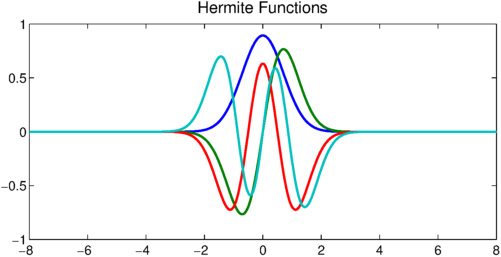
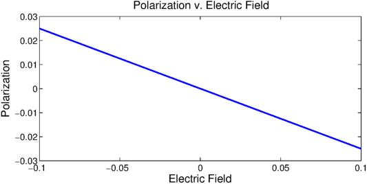

function OpticalResponse
Introduction
The optical response of a material is the measure of how the molecular polarization $P$ changes with respect to an applied electric field strength $E$. In most cases $P$ is analytic in $E$ and can be written as a Taylor series.
$$ P(E) = P_0 + \alpha E + \beta E^2 + \gamma E^3 + \cdots $$
Here $P_0$ is the static polarization of the molecule which does not affect the optical response (the optical response only depends on the derivatives of $P$). The nonlinear optical response is characterized by the coefficients corresponding to powers of $E$ greater than $1$. If the potential $V(x)$ of a given molecule is known the polarization can be computed by constructing the Hamiltonian $H$ and solving the Schroedinger eigenvalue problem.
$$ H = -\frac12 \frac{\partial^2}{\partial x^2} + V(x) $$
$$ H \psi(x) = \lambda \psi(x) $$
If the $\lambda$ are countably many and can be ordered as $\lambda_1 < \lambda_2 \leq \lambda_3 \leq \ldots$ then the polarization is computed by the formula,
$$ P = \frac{\int x |\psi_1(x)|^2 dx}{\int |\psi_1(x)|^2 dx} $$
where $\psi_1(x)$ is the first eigenfunction, also known as the ground state of the system. To add the contributions of the applied electric field strength $E$ a linear term is added to the Hamiltonian.
$$ H(E) = -\frac12 \frac{\partial^2}{\partial x^2} + V(x) + Ex $$
Solutions to Schroedinger's equation now depend on the parameter $E$.
$$ H(E) \psi(E,x) = \lambda(E) \psi(E,x) $$
If $E$ is not too large then the polarization can still be computed as before.
$$ P(E) = \frac{\int x |\psi_1(E,x)|^2 dx}{\int |\psi_1(E,x)|^2 dx} $$
From the Taylor series we see that the nonlinear optical response is characterized by higher order derivatives of $P(E)$ at $E = 0$, [1].
The quantum harmonic oscillator
One example of a simple molecule is a single electron bound by a quadratic potential $V(x) = 2x^2$. The solutions of this system are the Hermite functions. These can be computed easily using Chebfun.
L = 8;
H = @(E) chebop(@(x,u) -.5*diff(u,2) + 2*x.^2.*u + E*x.*u,[-L,L],'dirichlet');
[PSI,LAMBDA] = eigs(H(0),4,'sr');
LW = 'linewidth'; FS = 'fontsize';
plot(PSI,LW,2);
title('Hermite Functions',FS,16);

To see an alternative method for computing eigenfunctions of the Schroedinger equation using Chebfun checkout the command quantumstates.
A local function to compute the polarization is defined and passed to the Chebfun constructor.
Emax = .1;
x = chebfun('x',[-L,L]);
function pval = polarization(efield)
[psi,lambda]=eigs(H(efield),1,'sr');
pval = ((x.*psi)'*psi)/(psi'*psi);
end
P = chebfun(@polarization,[-Emax,Emax],'vectorize','eps',1e-10);
plot(P,LW,2);
title('Polarization v. Electric Field',FS,16);
xlabel('Electric Field',FS,16);
ylabel('Polarization',FS,16);

Unfortunately the errors in approximating $P(E)$ are significant enough to affect the interpolant and a larger truncation tolerance was required to get convergence in a reasonable time.
Taking derivatives of $P(E)$ at $E = 0$ gives the various optical response coefficients. For this particular example it can be shown that $\alpha = \frac14$, $\beta = 0$ and $\gamma \approx 0$.
dP = diff(P); alpha = dP(0) d2P = diff(P,2); beta = d2P(0)/2 d3P = diff(P,3); gamma = d3P(0)/6
alpha =
-0.249999999934894
beta =
0
gamma =
0
References
- Juefei Zhou, Urszula B. Szafruga, David S. Watkins, and Mark G. Kuzyk, Optimizing potential energy functions for maximal intrinsic hyperpolarizability, Physical Reviews A, 76 (2007), 053831 pp. 1-10.
end